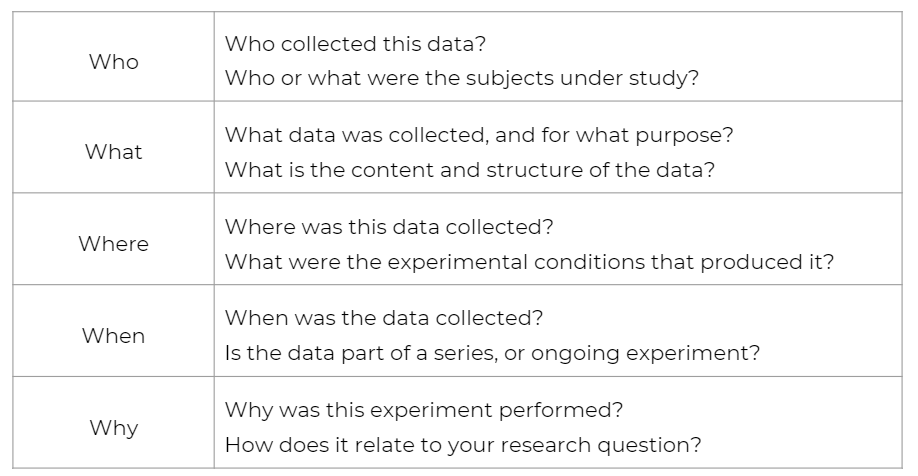
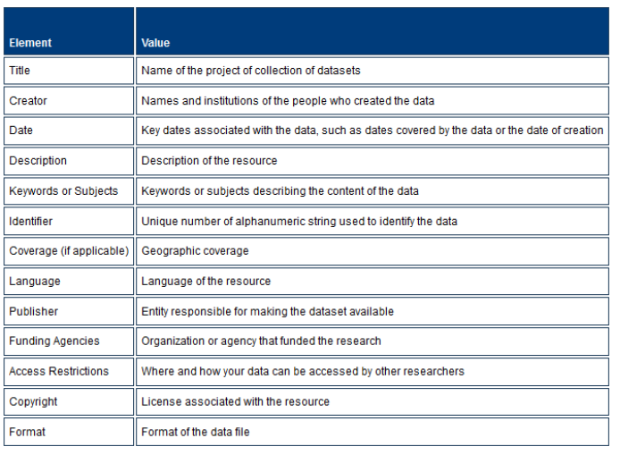

You can view slides from this talk here.
Data documentation is not only required by funders including IES, it is essential for data management. Data documentation should cover the who, what, where, when, and why of your project and your data (OSF: NIH).

Documentation also allows you to:
Documentation can take many forms. IES states that they expect documentation to “be a comprehensive and stand-alone document that includes all the information necessary to replicate the analysis performed by the original research team” and should include:
However, a) IES provides no template for how documentation is laid out OR what tools to use to create/share this information and b) outside of IES required documentation for data sharing, there may be additional documentation your team may want to keep to help manage internal processes.
This training will cover types of documentation you may want to keep. Many of these documents have overlapping information and some terms may be used interchangeably in the field (ex: Data dictionary and codebook or README and metadata). Also, some of the documents are important to start day one of the project, while others are more important to create at the end of the project when you are ready to share data. The point of this next section isn’t to implement all of these documents, but rather to consider which documents capture the information you need to have a successful project. It may just be a protocol and a data dictionary. Or it may be a protocol, a data dictionary and a README for each data file. Or it may be all of these documents! It depends on things such as the scale of your project and how you plan to share the data at the end of your project.
Additional reading on the importance of data documentation can be found here:
📑 University
of Helsinki
📑 Washington
University in St. Louis
I’ve seen this document called many other names including procedures manual, standard operation procedures (sop), research protocol, or coordinator’s manual. The CITI Good Clinical Practices training calls this a Clinical Protocol. Whatever term you use, this is a document/s to record all of your procedures and changes made to those procedures throughout the grant.
At some point someone will ask you how or why you did something the way you did. This is the document that will save you because it is very likely that you will not remember. This document also helps standardize your procedures. You can and should refer back to this document during a longitudinal study to ensure you continue to implement procedures in the same way.
I highly recommend always adding protocol as part of any data documentation plan. You can make separate protocol documents per procedure or keep them all in one standalone document with a table of contents. Most likely your protocol will not be shared outside of your team, but the information in your protocol can be used to inform other documentation such as READMEs or codebooks. Your protocol can live in any format that works for you (ex: .docx, .md, .txt, google doc, or you can use a platform such as protocols.io). It is a living document that will be continually updated so use a format that makes sense for you. All of your project/grant specific protocols should be housed in an easily accessible location such as the top of a project folder.
It is also possible to have protocols that may be applicable across all projects (such as rules for data entry). You can keep a copy of these more broad rules in an institutional protocol (or some may call it a lab manual) to be referred to for all projects and keep it in an accessible location such as your team folder.
Protocol should cover procedures/decisions for the following:
Each protocol should begin with the following:
There may be times when you need to revise your protocol, either due to decisions made by the researchers (ex: moving surveys from paper to online due to the pandemic) or to note deviations from the protocol discovered during data collection (ex: data collectors were allowing students to read assessment instructions on their own rather than reading them out loud to the group). For any changes to or deviations from the protocol after the project has begun, add the following below the original protocol section:
It is also good practice to add a copy of your data collection instruments to your protocol (Surveys, Interview Questions, etc.), as well as changes/versions of those and explanations for the changes.
📑 These slides
from Jessica Logan, Ph.D. have nice protocol examples.
📑 This sample protocol (or sop) from
CITI, while not education focused, provides a nice template for how to
lay out each individual protocol.
📑 This is a cool example
of an interactive research protocol housed on GitHub. You could build
something similar in a tool like Google Docs. While this one isn’t
education specific, you can see how the outline can be replaced with
education research content.
A style guide is a set of standards around data management rules. It improves consistency within and across files and projects. This document includes conventions for procedures such as variable naming, value coding, file naming, versioning, and file structure. Consider having a style guide specific to every project (for variable naming, value coding) as well as a general style guide that applies to all projects (for file structure, versioning, and file naming). This guide can be be kept in any form such as .txt or .pdf and should be housed where it can easily be accessed by all team members (Ex: a style guide that applies across projects may be kept on a wiki and a project-specific style guide may be kept as a protocol or README in a project folder). See Training3 for best practices in style guides.
Example style guide.
I am including a wiki in this list even though I think it is an unconventional documentation tool in education research. A wiki can help your team internally document, organize, and navigate reference material. If you use platforms such as Microsoft SharePoint, your default team page type is wiki and your home page can be a great place to store information that your team frequently refers to. SharePoint describes a wiki as “a site that is designed for groups of people to quickly capture and share ideas by creating simple pages and linking them together.” It is a page that anyone on your team can add/edit content (a short blurb about the document) and then can link to those referenced documents for easy access.
Wikis can be made for specific research projects and are great for referring to frequently requested information (ex: recruitment information or participant payment details). You can also make a general research team wiki that includes information that either applies to your entire team (ex: Team meeting notes or employee manual) or information that is relevant across all projects (ex: Style guide, lab manual).
📑 You can make wikis with many other tools, but you can read more about SharePoint’s wiki here.
📑 Notion is another tool I recently learned of to build a wiki as well.
📑 There is a great episode of the Education Data Chat podcast where they discuss wikis as well.
A data dictionary is another essential data management document and I highly suggest you start this before your ever collect a piece of data. This will help you set up successful back-end coding as you create data collection tools and it will serve as a reference document you can use as questions come up about the data. It is also a document that can be shared with others to help them better understand your data. A data dictionary is usually in rectangular format, for example an Excel spreadsheet, Google sheet or something similar that has rows and columns. It includes all information relevant to every variable in your data.
📑 Here is a nice example of a very simple data dictionary.
Your dictionary should capture information such as:
You may consider having separate data dictionaries per expected final dataset. So for example, if you plan to have a final teacher dataset and a final student dataset, you may want to have a student dictionary and a teacher dictionary rather than having only one data dictionary and marking teacher or student in the universe column.
As I mentioned earlier, it is important to start a data dictionary before ever collecting data. You should be able to begin filling in information for the data you have control over. For example, if you are making and administering the survey, you should be able to know what variables will be in that data, how you want to name them, and how they should be coded. However, you may not know this information for other variables until after data collection. For example, if you are administering a 3rd party assessment, you may not know what the exported data is going to look like until after you have collected the data and it has been scored. Just remember, this is a living document that will updated continually throughout the life of the project.
In order to start a data dictionary, you should gather the following information:
It’s good to also consider starting to document the variables you aren’t collecting but you are assigning or deriving.
Quick thought: Accounting for Time
When deciding how to account for time, consider how you plan to merge your data across time.
Additional reading on data dictionaries can be found here:
📑 OSF
📑 USDA
📑 University
of Helsinki
📑 Karl
Broman
📑 Penn
State
📑 Education Data Done
Right
Like a data dictionary, a codebook also captures variable information, as well as project level information. It should capture all a user would need to know in order to understand and correctly interpret your data. It is typically part of the metadata that is added to a data archive, or is given to those who request your data after the project is complete. It usually takes the form of a plain text file (.txt), pdf (.pdf), or extensible markup language (.xml), rather than a proprietary form such as .docx. If you embed metadata into your data, such as variable labels, value labels and missing values, several statistical programs (including R, SPSS, SAS and Stata) will export codebooks for your final datasets. You can make one large codebook that includes all data for your project, or make separate codebooks by dataset (ex: Teacher level dataset codebook), or even by measure (ex: Student survey codebook).
📑 Here is a nice example of a codebook.
Your codebook should captures things such as:
Other optional content for a codebook:
Last, I have found that sometimes the term data dictionary is synonymous with codebook. I don’t think the name matters, but for the sake of this training I am specifying a data dictionary as the document in tabular form with only variable level information and a codebook as a document usually in text format. You can keep either or both types of documentation. I think the data dictionary as laid out in this training is the easier document to update throughout the life of the project and assists with project implementation, while I view the codebook as a document to summarize the final datasets at the end of the project (and to be included with data archives/requests).
Further information on codebooks can be found here:
📑 ICPSR
📑 SAMHDA
📑 Kai
Horstmann
📑 The R
package Codebook
A README is a plain text (.txt), markdown (.md), pdf (.pdf), or extensible markup language (.xml), standalone file that explains your files. README files are most known for their use in programming, but have become more prevalent in research. It is recommended to make one README file per dataset. This standalone document will accompany each dataset. It should be named so it is easily associated with the dataset and it should be housed in the same folder the data is in.
A README should capture data such as:
Excellent examples, templates, and further details can be found here:
📑 README with Codebook included:
University of Munster
📑 README
template: Oregon State
📑 README
template: Cornell
📑 README template: OSF
📑 README
recommended content: UCI
📑 README
recommended content: Cornell
📑 README
recommended content: IHEID
Metadata is data about data. They are structured data that “provide information about the dataset to help people find, understand, and use your data” (IES). Most of the time when you hear the term metadata, it will be referring to what I am going to call project-level metadata.
Common elements of project-level metadata include:
 Source: University of Portland
Metadata can also also be categorized further into data-level and variable-level:
Data-level metadata, which might be considered administrative or technical metadata, focuses more on the details of each dataset such as instruments used to collect the data and software used to process the data. Lucikly, creating this metadata requires no extra effort because this is the exact information captured in sections like Methodology in your README files above.
Variable-level metadata, which might be considered structural metadata, is data about the variables in your dataset. This can be both incorporated into your data, by adding attributes like variable and value labels, as well as accounted for externally, and it is includes all the information discussed earlier in your codebook and/or data dictionary. This data should also describe how datasets relate to one another (ex: student dataset is linked to teacher dataset through tch_id). If your data is qualitative in nature (such as documents, photos, videos, or sound files), metadata such as date/time/location, tags/keywords, or measurement information can sometimes be embedded directly into your files (IHEID).
The most notable thing about metadata is that many fields follow metadata standards that aid in the “retrieving and indexing” of your data (University of Arizona). Standards include things such as agreed upon formats, vocabularies, and structure. For example social science often follows the Data Documentation Initiative (DDI) standards. However, (IES) states that education has no standards and that instead “researchers should document everything and strive to make notation as interpretable as possible”. Metadata can either be embedded within data or included in a separate file such as a README.txt or .pdf file.
If you plan to archive your data, the data repository you plan to use may have standards in place that you will need to follow. Consult your repository’s website for detailed information on what is required for archival. Many universities have archives that are available for use and IES also has recommended data repositories that can be found here.
Additional metadata information can be found here:
📑 Oregon
State
📑 UCI
📑 NCSU
📑 ICPSR
📑 DDI
📑 ADS
📑 University
of Helsinki
📑 London
School of Economics and Political Science
📑 Washington
University in St. Louis
📑 Data
Management for Researchers
📑 DMP Tool General
Guidance
📑 CESSDA
📑 Washington
University
📑 Jessica
Rex
Last you should consider documenting all your data processes to allow for reproducibility. This may fit into one of the above mentioned documents, or it may be a separate text or markdown files (such as a README), a syntax file, or even an Excel file. Keep this document in the folder related to the content and name it accordingly. Consider tracking things such as:
Versioning (Ex:
README_district-file-changelog.txt):
district-data_2020-10-02.xlsx: File received from
District A containing 2019-20 test scoresdistrict-data_2020-10-03.xlsx: File received from
District A with 5 additional students added after
district-data_2020-10-02.xlsx was receiveddistrict-data_2020-10-04.xlsx: File received form
District A with test scores updated for 30 students because errors were
found in district-data_2020-10-03.xlsxData cleaning plan (Ex:
district_data-cleaning-plan.md)
Files used in data cleaning process (Ex:
README_district_data-cleaning-process.txt).
district_cleaning-plan.mddistrict_cleaning-syntax.Rdistrict-data_raw_2020_09_08.xlsxdistrict-data_clean_2020_10_09.csvA setup file for steps to create tables and reports (Ex:
00_setup.md):
01_clean-the-data.R to clean the
data02_check-errors.R to check for
errors03_run-report.R to create the
reportThe main takeaway is that it is important to document everything. Not only is it required by funders and by data repositories, as well as necessary for those submitting data requests, but it is crucial to the integrity and reproducibility of your project. While you should try to standardize your documentation as much as possible, don’t get stuck in the details of the format or the structure. Instead focus on getting the content, rules, and procedures down before you forget.
Although, publishing data will come in a later module, I did want to wrap up by saying that when it comes time to publish your data (whether in a repository or data sharing through your own request system), plan to include the following documentation with your final datasets:
📑 If you want to see an amazingly thorough (and very long) example of data documentation, explore the Early Childhood Longitudinal Study, Kindergarten Class of 2010-11 User’s Manual from IES.
{kind=link}